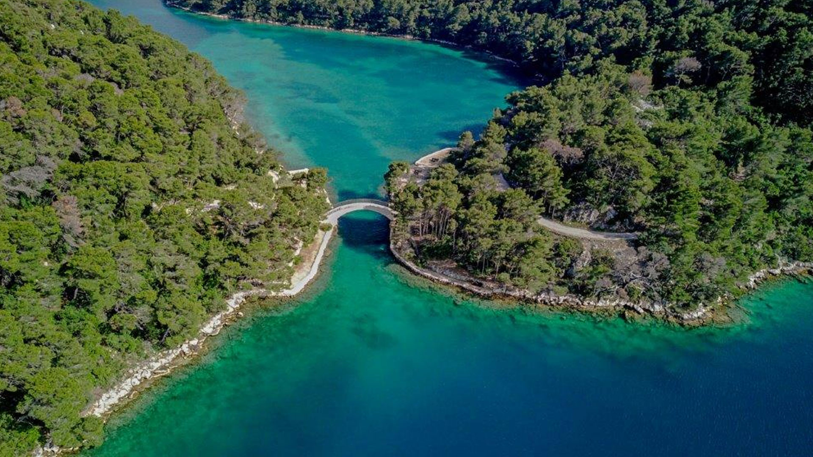

Mljet



Nacionalni park Mljet obuhvaća zapadni dio otoka Mljeta, jednog od najzelenijih i najmirnijih otoka na Jadranu. Mljet se često opisuje kao otok šuma i jezera, jer su guste borove šume i dva slana jezera njegova najprepoznatljivija obilježja. Park nudi osjećaj tišine i prirodne ravnoteže, s krajolikom koji djeluje gotovo netaknuto. Posjetitelji ovdje nalaze mir, daleko od užurbanosti i masovnog turizma.
Središnji dio parka čine Veliko i Malo jezero, prirodne uvale povezane s morem uskim kanalima. Iako su slana, jezera imaju mirnu površinu, pa djeluju kao ogledala koja reflektiraju nebo i šumu. Na Velikom jezeru nalazi se otočić Svete Marije s benediktinskim samostanom, što dodatno obogaćuje kulturni doživljaj. Ovaj otočić često je simbol parka, jer spaja prirodni pejzaž s povijesnim elementom.
Šumska vegetacija Mljeta iznimno je bogata. Dominiraju alepski bor i čempres, ali prisutne su i brojne druge mediteranske vrste. Šetnja kroz šumu pruža osjećaj hladovine i svježine čak i tijekom toplih ljetnih dana. Miris borova i soli stvara posebnu atmosferu, a šumske staze povezuju obale jezera s uvalama i vidikovcima. Ovdje je šuma ključni element identiteta otoka.
Područje parka bogato je i životinjskim svijetom, iako je otok izoliran. U šumama žive jeleni lopatari, mungosi i razne vrste ptica. Posebno su zanimljive ptice močvarice koje se zadržavaju uz obale jezera. Iako je fauna skromnija u usporedbi s kontinentalnim parkovima, prisutnost ovih životinja doprinosi osjećaju živosti i prirodne ravnoteže. Posjetitelji često uživaju u tišini, uz povremeni zvuk ptica i šum vjetra.
Podmorje oko Mljeta jednako je vrijedno kao i kopneni dio. Bistra voda, livade posidonije i raznolike riblje vrste stvaraju bogat morski ekosustav. Plivanje, veslanje i snorkeling popularni su načini istraživanja, jer omogućuju pogled na podvodni svijet. U jezerima je more mirnije i toplije, pa su ona idealna za opuštanje i obiteljski boravak.
Otok Mljet ima dugu povijest, a tragovi ljudskog života vidljivi su u ruševinama, kapelicama i starim stazama. Benediktinski samostan na otočiću Svete Marije jedan je od najvažnijih kulturnih lokaliteta, ali po cijelom području mogu se pronaći manje građevine koje svjedoče o prošlosti. Ta povijesna dimenzija čini Mljet više od prirodnog parka, jer se posjet pretvara u susret s kulturnim nasljeđem.
Jedan od najljepših načina za doživjeti Mljet je biciklistička ili pješačka tura oko jezera. Staze su blage, okružene šumom i morem, a povremeni vidikovci otkrivaju pogled na otočić i otvoreno more. Takvo kretanje omogućuje sporiji ritam i potpuni doživljaj prirode. Mnogi posjetitelji ističu da je upravo ta mogućnost mirnog obilaska ono što Mljet čini posebnim.
Sezonske promjene na Mljetu su suptilne, ali primjetne. Proljeće donosi cvatnju i intenzivnu zelenu boju, ljeto je toplo i mirno, jesen donosi zrelije tonove i manje gužve, a zima je tiha i mirna, s blagom klimom. Ta stalna ugodnost čini Mljet atraktivnim tijekom cijele godine, ali posebno za one koji žele izbjeći vrhunac turističke sezone.
Park je usmjeren na održivi turizam i zaštitu prirode. Kretanje je regulirano, a posjetitelji se potiču na poštivanje pravila i očuvanje okoliša. Plovidba po jezerima kontrolira se kako bi se smanjio utjecaj na ekosustav, a određene aktivnosti ograničene su radi zaštite staništa. Takav pristup omogućuje očuvanje prirodne ravnoteže i dugoročnu zaštitu parka.
Mljet je često opisan kao otok mira. U odnosu na druge jadranske otoke, ovdje je manje gužve i više prostora za tišinu. Šetnja šumom, pogled na mirnu površinu jezera i spor ritam života stvaraju osjećaj odmora koji je rijedak. Posjetitelji često ističu da im boravak na Mljetu donosi osjećaj opuštenosti i unutarnjeg mira.
Važan dio iskustva na Mljetu je i odnos prema prirodi. Ovdje se uči da je priroda prostor koji treba poštovati, a ne samo koristiti. Otok pokazuje kako se čovjek može uklopiti u okoliš bez velikih zahvata i kako se prirodne vrijednosti mogu očuvati uz pažljivo upravljanje. Taj pristup čini Mljet primjerom održivog odnosa prema prirodi.
Uz prirodne ljepote, Mljet nudi i jednostavnu, ali prepoznatljivu lokalnu gastronomiju. Riba, maslinovo ulje, med i lokalno vino dio su ponude koja prati posjet. Takvi okusi dopunjuju doživljaj prirode i daju mu dodatnu dimenziju. Posjetitelji često povezuju Mljet s jednostavnošću i autentičnošću, što se vidi i u hrani i u načinu života.
Šetnje uz obalu jezera posebno su ugodne zbog mirnog vala i tišine. Drvene klupe, sjenovita mjesta i pogled na otočić stvaraju prostor za kratki odmor i promatranje prirode. U tim trenucima park djeluje gotovo kao prirodno utočište, mjesto gdje se vrijeme usporava. Takva atmosfera često ostavlja snažan dojam, jer se razlikuje od uobičajenog ritma života.
Mljet je također zanimljiv zbog svoje geološke strukture. Krški teren, uvale i podzemni kanali govore o dugotrajnom djelovanju vode. Jezera su rezultat prirodnog procesa, a njihova povezanost s morem čini ih jedinstvenima. Ovi elementi čine park važnim i s edukativne strane, jer pokazuju kako priroda oblikuje krajolik kroz stoljeća.
Na Mljetu se jasno osjeća prijelaz između kopnenog i otočnog svijeta. Iako je otok izoliran, njegovi šumski pejzaži podsjećaju na kontinentalne krajolike, dok mirisi mora i soli ostaju stalno prisutni. Taj spoj daje otoku posebnu atmosferu, u kojoj se priroda doživljava na drugačiji način nego na kopnu. Posjetitelji često primjećuju kako se osjećaj prostora mijenja s promjenom smjera vjetra i svjetla.
Mir je na Mljetu više od dojma, on je stvarni dio svakodnevice. Manji broj posjetitelja, odsutnost velikih prometnih tokova i bogate šume stvaraju uvjete za potpuno opuštanje. Takva tišina omogućuje da se čuju detalji prirode, od šuštanja lišća do dalekih zvukova mora. U takvom okruženju boravak postaje iskustvo koje smiruje i vraća osjećaj ravnoteže.
U park se često dolazi i zbog osjećaja sporog vremena. Ovdje se dani mjere šetnjama, plivanjem i promatranjem prirode, a ne rasporedima i satima. Takav ritam posebno odgovara onima koji traže odmor bez žurbe. Mljet tako postaje mjesto gdje se lako uspori i ponovno uspostavi ravnoteža između tijela i okoline.
Posebno je ugodno promatrati mirnu površinu jezera u kasno popodne, kada se svjetlost smekša i šuma dobije dublje tonove. U tim trenucima otok djeluje gotovo uspavano, a mir postaje najjači doživljaj. Takva jednostavnost često ostaje kao najvrjednija uspomena s Mljeta.
Ovaj mirni ritam čini Mljet idealnim za one koji žele istinski odmak i tišinu.
Za fotografiju, Mljet nudi mekše boje i mirnije prizore. Svjetlo na otoku često je blago, posebno u jutarnjim i večernjim satima, što stvara idealne uvjete za snimanje pejzaža. Odrazi na površini jezera i kontrast između šume i vode daju slikovitost koja je prepoznatljiva i vrlo fotogenična. Takvi prizori privlače posjetitelje koji žele zabilježiti ljepotu u njezinoj smirenoj formi.
Otok je i mjesto susreta različitih utjecaja, od povijesnih pomorskih veza do tradicionalnog otočnog života. To se osjeća u načinu na koji su naselja smještena uz obalu, ali i u malim lukama i uvalama koje su stoljećima služile kao zakloni. Takva povijesna slojevitost daje Mljetu dodatnu dubinu, jer posjet nije samo prirodni doživljaj, već i susret s otočnom tradicijom.
Na kraju, Mljet ostaje u sjećanju kao otok gdje se priroda i mir stapaju u jedinstveno iskustvo. Nema dramatičnih planinskih vrhova ili velikih slapova, ali postoji sklad jezera, šuma i mora. Taj sklad stvara posebnu atmosferu koja se teško zaboravlja. Posjet Mljetu nije samo obilazak parka, već i susret s jednostavnom, ali dubokom ljepotom mediteranske prirode.